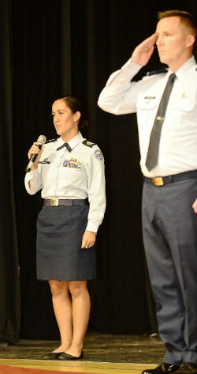
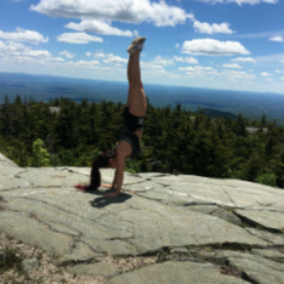
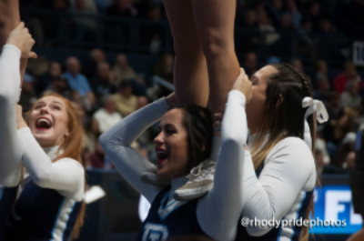

Hi, I'm Catie. I am currently a sophomore at the University of Rhode Island. I am a
double major in Computer Engineering and Computer Science, and I am interested in minoring in
Cyber Security.
When I am also apart of the University's cheerleading team, as well as I am an
U.S. Air Force ROTC cadet at the University of Connecticut's detachment. After commissioning I
am hoping to become a Cyberspace Operations Officer
and go career as an officer in the Air Force.
In the little free time I like to spend as much time outside as I can, whether that's going for a run,
hiking, walking my dog, or being by the water. I have three cats, two dogs so you could say I like the
company of animals.
To destress I enjoy singing, cooking, any type of physical fitness, or even a good
nap.
|  |  |
 |
|---|